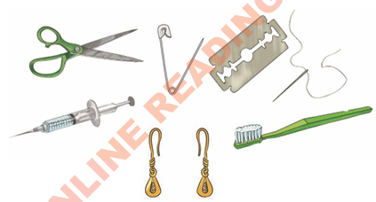

Njia za maambukizi ya VVU
VVU vinakaa kwenye majimaji ya mwili wa binadamu hasa damu. VVU huambukizwa kutoka kwa mtu mmoja kwenda kwa mwingine kwa njia mbalimbali kama vile zifuatazo:
(a) Kuchangia mswaki na vifaa vyenye ncha kali kama sindano, wembe, hereni, pini na mkasi. Kuchangia vifaa vyenye ncha kali na mtu mwenye VVU kunaweza kusababisha maambukizi. Kielelezo namba 4 kinaonesha vifaa vinavyoweza kuchangia maambukizi ya VVU.

Maelezo ya picha: Kielelezo kinaonesha mkasi, pini, wembe, sindano yenye uzi, sindano ya hospitali, hereni mbili na mswaki. Vifaa hivi vinaweza kuchangia maambukizi ya VVU vikitumiwa na zaidi ya mtu mmoja.Kielelezo namba 4 kinaonesha vifaa vinavyoweza kuchangia maambukizi ya VVU.
(b) Kuongezewa damu yenye VVU. Kuongezewa damu yenye VVU kunasababisha maambukizi. Damu ni lazima ipimwe na kuhakikiwa kuwa ipo salama na kuwa haina VVU kabla ya kumwongezea mgonjwa. Kielelezo namba 5 kinaonesha mgonjwa anayeongezewa damu salama katika kituo cha afya.